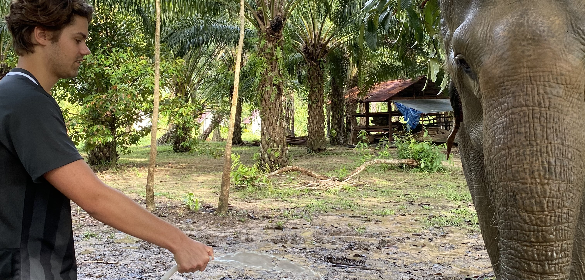

Sådan forbereder du dig
Hvad skal du nå inden afrejse? Få svaret lige her!
Når man rejser om på den anden side af jorden, er der en række af ting man skal have styr på. Jeg har samlet de væsentligste nedenfor.
Vaccinationer er en stor del af forberedelsen inden afrejse, og det kræver tid at planlægge de forskellige vacciner man skal nå at have inden man tager afsted. Jeg bookede mine vacciner gennem danske lægers vaccinationsservice sikkerrejse.dk, og der er en guide på deres hjemmeside til hvilke vacciner man skal have i det pågældende land, og en vejledende pris.
Jeg vil helt sikker anbefale, at man booker vaccine hos dem fremfor hos ens egen læge, da ens egen læge ikke kan sikre, at de har vaccinen på lager. Book en tid til konsultation i god tid inden afrejse. Gerne et par måneder forinden. Er du medlem af sygeforsikring Danmark sparer du en del penge, så det kan altså godt betale sig, at melde sig ind der!
Når man rejser til Thailand skal man have det såkaldte ”thaipass”. Dette er ikke et visum, men det giver opholdstilladelse i 30 dage. Skal man opholde sig i længere tid skal man have et turistvisum. Et thaipass koster omkring 300 kr.
Når man skal ansøge om thaipass skal man udfylde en række dokumenter. Herunder vaccinationer, pasoplysninger, hvor længe man skal opholde sig i landet, på hvilket hotel, hvilken lufthavn man lander i, osv. Fra man ansøger om thaipass, til man får svar, vil der gå op til 7 arbejdsdage.
Flybilletter er oftest meget dyre, medmindre man køber dem i god tid. Jeg vil anbefale at købe dem ca. et halvt år inden afrejse. Derudover giver det bedst mening, at rejse uden for skolernes ferie. Thailands højsæson er dog i februar, men man nemt tage derned i sommerferien også!
Når man bestiller flybilletterne, skal man huske, at slå inkognitotilstand til, så man ikke bliver sporet, og ender med at betale meget mere for flybilletterne, end hvad de egentligt kostede første gang man kiggede på dem.
Jeg plejer oftest, at søge på b.la. momondo og skyscanner for, at finde de billigste fly. Derefter hopper jeg over på selve flyselskabets website, da man ALTID skal bestille igennem flyselskabets eget side. Disse ”mellemmænd” mellem kunde og flyselskab kan snyde – og du kan risikere at miste en masse penge. Det gjorde jeg desværre. Man lærer af sine fejl :)
Sørg for at købe en rejseforsikring inden du tager afsted. Nogle har rejseforsikring gennem deres indbo eller ulykkesforsikring. Man skal dog være opmærksom på, at disse forsikringer oftest ikke dækker en rejse på mere end 30 dage – og nogle dækker heller ikke uden for Europa. Jeg bestilte min rejseforsikring igennem gouda. Jeg bestilte både afbestillingsforsikring (skal gøres dagen man køber flybilletter), og selve rejseforsikringen. Et god råd er dog, at ringe rundt og høre hvilken forsikring der giver bedst mening for dig, og den rejse du skal på.
Prisen for afbestillingsforsikring = 707 Kr.
Prisen for rejseforsikring = 1181 Kr.
Dette er med udgangspunkt i en rejse på 1 måned i Thailand
De sidste ting lige inden afrejse
Lav en kopi af dit pas, kørekort, kreditkort mm., i tilfælde af, at det bliver stjålet. Køb en form for bæltetaske du kan have indenunder din trøje, hvor du har disse papirer! Man ved jo aldrig hvad der kan ske.
Book de første par nætter på din rejse, så du ved hvor du skal tilbringe det første stykke tid. Book et sted tæt på lufthavnen, så du ikke skal bruge flere timer på transport, efter en lang flyvetur. Jeg bruger b.la. www.booking.com , www.hotels.com , www.airbnb.com
Og til sidst – tjek transport fra lufthavnen til dit hotel. Skriv eventuelt en besked til det hotel du skal bo på, om de kan arrangere en taxa til afhentning i lufthavnen.